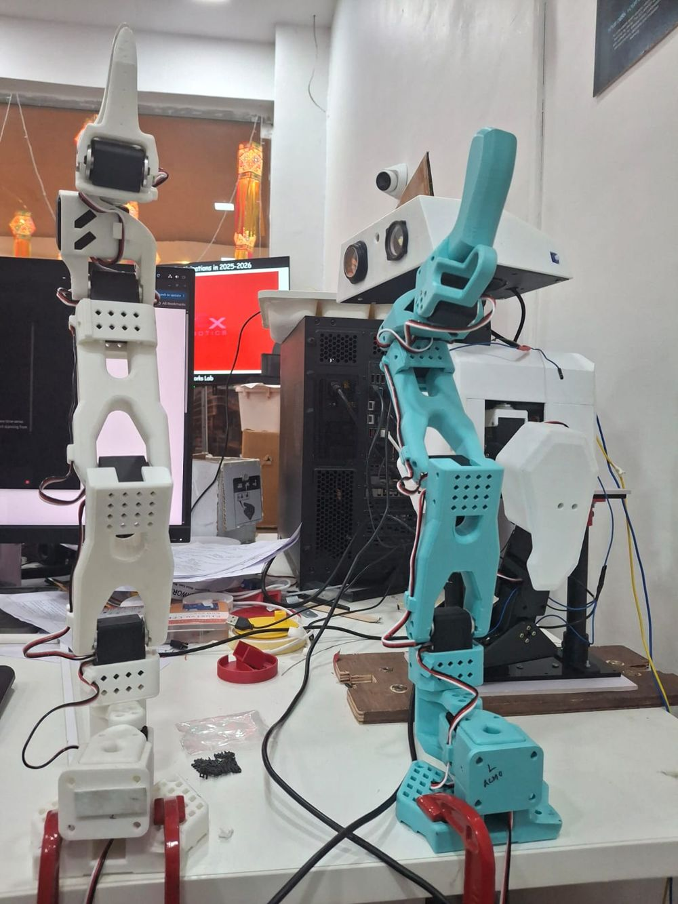

Ajay Ummadi › Projects › LeRobot SO-101 Arms
Project · Robotics
LeRobot SO-101 arms
I assembled a leader and follower SO-101 pair by hand, following the LeRobot guide. Below: photos of my real build, and an interactive 3D model you can pull apart.

Build it yourself
Seven stages, one arm.
This is the follower arm, built from the official CAD. Hover a part, a marker or a name to light up its stage.
- 1BaseBase plate with its motor, motor holder and the mounting plate for the servo controller.
- 2ShoulderShoulder motor, its holder and the pitch rotation piece.
- 3Upper armThe upper arm link with its motor.
- 4Lower armForearm link, wrist motor holder and a motor.
- 5WristWrist bracket carrying the motor that rotates the gripper.
- 6GripperThe fixed gripper body with its motor.
- 7Moving jawThe moving jaw that closes on objects.
Drag to rotate · scroll to zoom
My build
The real arms
The teal arm is the leader I move by hand, and the white arm is the follower that copies it. Tap a photo to enlarge it.
The kit
What goes into a pair
12 STS3215 servos
Six per arm: shoulder pan, shoulder lift, elbow, wrist flex, wrist roll and gripper.
Different gearing
The follower runs 1/345 gearing on all six motors. The leader mixes 1/191, 1/345, 1/191, 1/147, 1/147 and 1/147 so it is light to move by hand.
Bus and power
One bus servo adapter per arm, with 5 V for the follower and a separate supply for the leader.
Set IDs, then assemble
Find the USB ports, give each motor an ID from 1 to 6, then assemble joint by joint from the base up.
Calibrate
Calibration records each arm's positions so the leader and follower values match, which also keeps trained policies portable between robots.
Then teleoperate
With both arms calibrated I run them from my own dashboard. See the SO-101 Teleoperation Studio.
Credits: SO-101 design, URDFs and STL meshes from TheRobotStudio/SO-ARM100 (Apache-2.0), converted for the web here. Assembly steps follow the LeRobot SO-101 guide. Rendered with Three.js (MIT). Not endorsed by The Robot Studio or Hugging Face.
FAQ
Questions
What is the SO-101?
The SO-101 is a low-cost, 3D-printable robot arm from The Robot Studio's SO-ARM100 project, supported by Hugging Face's LeRobot library. It uses six STS3215 bus servos per arm.
Did Ajay Ummadi assemble his own?
Yes. Ajay assembled a leader and follower SO-101 pair by following the LeRobot assembly guide, then calibrated them for teleoperation.
What is the difference between the leader and follower arm?
The leader is moved by hand and uses motors with varied gear ratios (1/191, 1/345, 1/191, 1/147, 1/147, 1/147) plus a handle and trigger. The follower copies it in real time and uses 1/345 gearing on all six motors, with a gripper.
Where does the 3D model come from?
From the official SO-101 CAD in TheRobotStudio/SO-ARM100 (Apache-2.0), converted to a compact format for the web.